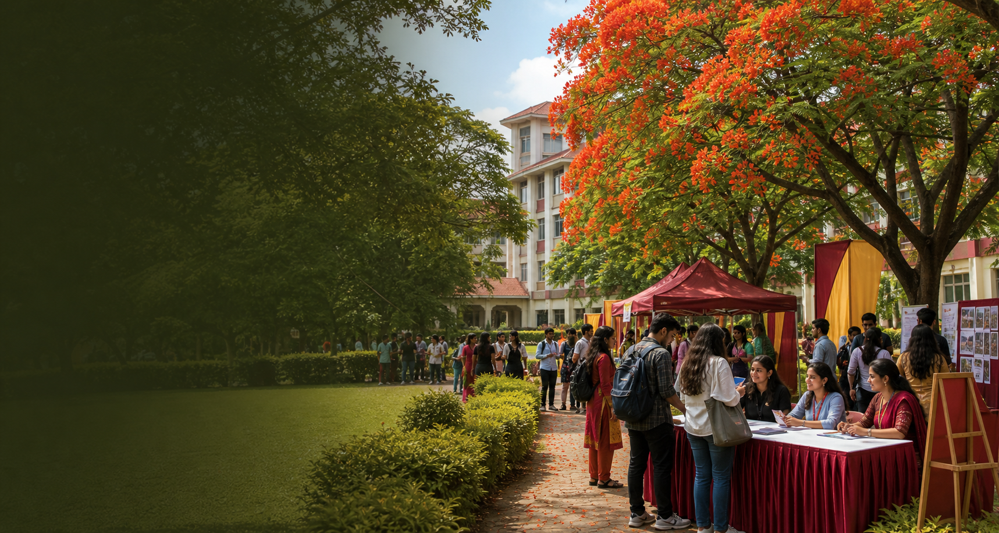

18Jun
Academic
GU Research Poster Colloquium
Phanidhar Datta Seminar Hall · 10:00 AM

Gauhati University event operations
A dedicated event-management experience for Gauhati University, Guwahati-781014, Assam, helping departments, student bodies, and administrators coordinate approvals, venues, registrations, notices, and live event updates.
Upcoming GU events
Filter by event type and see sample activities for departments, student groups, and university offices.
Academic
Phanidhar Datta Seminar Hall · 10:00 AM
Cultural
Jalukbari campus grounds · 5:30 PM
Seminar
Technology faculty block · 9:30 AM
Sports
University sports complex · 4:00 PM
GU management suite
Check seminar halls, campus grounds, classrooms, equipment, and coordinator assignments.
Route requests through departments, registrar review, security, finance, and administration.
Estimate event costs, upload bills, and keep sponsorships visible to GU stakeholders.
Collect student RSVPs, department affiliation, attendance, feedback, and certificates.
GU system map
The project graph found 212 nodes and 323 relationships. Its strongest hubs map well to a GU event portal: role-based access, event status, registrar approval, notices, notifications, and public discovery.
Draft, pending, approved, rejected, live, and completed states keep each GU event traceable.
Students discover public GU events, departments create requests, and registrar users approve or reject them.
Arts, Science, Commerce and Management, Law, Technology, and allied health groups can be organized cleanly.
Notifications and notices make approvals, updates, unread items, and campus announcements visible to the right users.
GU process
Add GU department, event details, expected audience, venue needs, and budget.
Track department, registrar, security, and administration review with clear pending actions.
Publish the GU event page and manage students, faculty, and guests from one dashboard.
Capture attendance, feedback, expenses, and final outcomes for university records.
Start planning
Send the core details and the GU events office can begin routing approvals, booking resources, and preparing your registration or notice page.